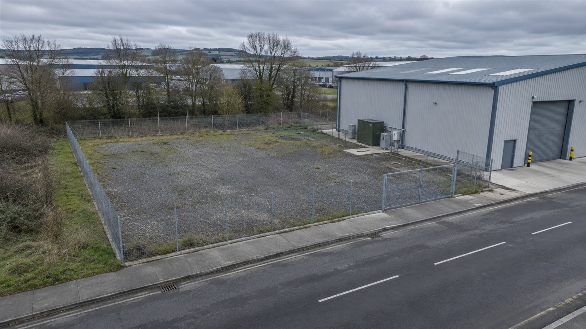
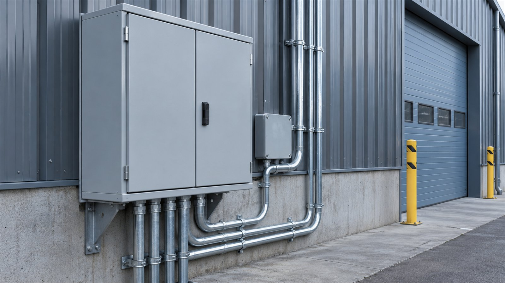
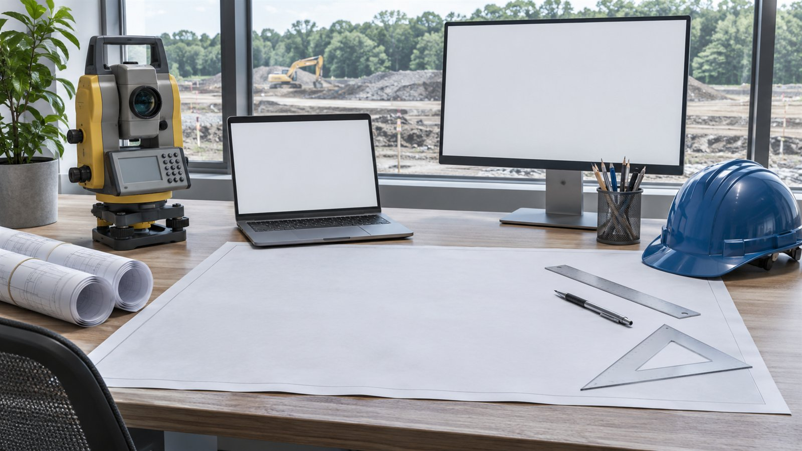

Пример · данные условные
Площадка под небольшое производство / кейс-концепт
До покупки участка — понять его ограничения.
Сводим сети, мощности и неизвестные в одну карту решения.
Посмотреть результат
Инженерный аудит участка или зданияИллюстрация подхода, не выполненный заказ
Задача
Условный инвестор выбирает участок под производственный корпус. Близость сетей на карте ещё не означает, что к ним можно подключиться с нужной мощностью. Нужно отделить подтверждённые сведения от предположений и составить перечень проверок до покупки.
Что сделали
Показываем последовательность работы на условном проекте.
Описали потребности
Собрали требования к электричеству, воде, отводу стоков и доступу на участок.
Сверили документы
Сопоставили предоставленные планы, условия подключения и сведения о границах.
Собрали ограничения
Нанесли доступные данные о сетях и отметили неподтверждённые подключения.
Подготовили вывод
Передали карту рисков, перечень запросов и последовательность дальнейших действий.


Схема ограничений и инженерное заключение
В этом сценарии заказчик получает:
- Сводная схема сетей и точек проверки
- Таблица подтверждений и недостающих документов
- Заключение для решения о дальнейшей проработке
Условная схема, не геодезическая съёмка. Аудит не заменяет проектную документацию и изыскания.
Пример · данные условные
Площадка / схема проверки
| Ресурс | Потребность | Статус |
|---|---|---|
| Электричество | 150 кВт | Запросить ТУ |
| Водоснабжение | 8 м³/сут. | Уточнить точку |
| Подъезд | Грузовой | Проверить право |
Стоимость и срок
175 000 ₽
Ориентир из прайса. Итоговый объём и стоимость согласуем по исходным данным.
2–3 недели
Как проходит работа
- 1Исходные данные и границы задачи
- 2Рабочая версия и вопросы
- 3Согласование и передача материалов
Срок считаем после получения согласованного комплекта данных. Ожидание внешних ответов обсуждаем отдельно.
Есть похожая задача?
Подготовьте исходные документы и желаемый результат.
Обсудить похожую задачу
Форма на сайте студии работает в демонстрационном режиме.